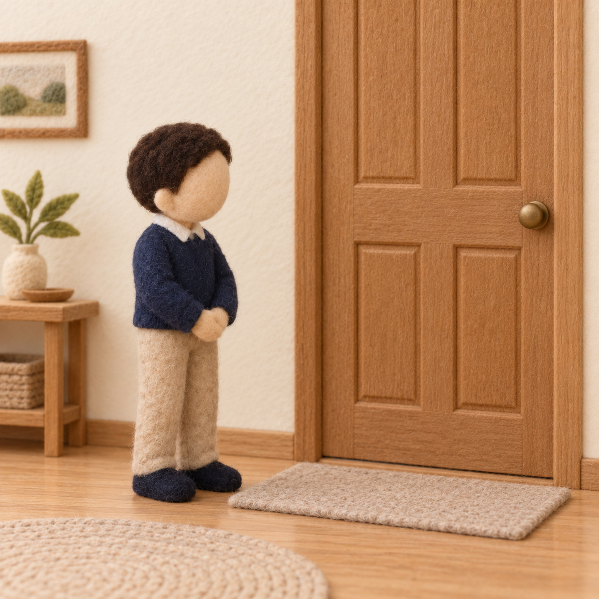

رتّب خطوات الاستئذان
وحدة العائلة · أدب واقتداء — الدرس الثاني: أستأذن كما علّمني النبي ﷺ · ركن أدرك وأستمتع
طريقة العمل: اقصصي بطاقات الخطوات الخمس، ويرتّبها الطفل على الشريط أدناه من البداية إلى النهاية، ويذكر أدب كلِّ خطوة. نتحدّث: هكذا علّمنا النبي ﷺ أن نستأذن قبل أن ندخل.

صورة: الانتظارأقفُ بجانب الباب
 صورة: الطرق
صورة: الطرقأطرقُ برفق
 صورة: السلام
صورة: السلامأسلّمُ وأستأذن
صورة: الانتظار
أنتظرُ الإذن
 صورة: الرجوع
صورة: الرجوعأرجعُ إن لم يُؤذن
شريطُ الترتيب — من البداية إلى النهاية
←
←
←
←
الخلاصة: الاستئذان خطواتٌ مرتّبة: أقفُ بجانب الباب ← أطرق ← أسلّم وأستأذن ← أنتظر ← أرجع إن لم يُؤذن. — للمعلمة: نشاطٌ تطبيقيٌّ بعد الدرس لمجموعةٍ صغيرة (٤–٦)، وثّقي استقلال الطفل دون تحويله إلى اختبار.
دليل معلمة غرس القيم · نشاط تطبيقي — ركن أدرك وأستمتع